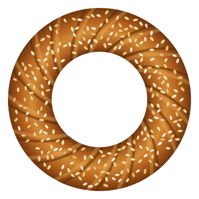

Kaç kişiye kaç simit?
Kişi sayısını girin, hesaplayıcı adedi çıkarsın ve çeşitlere bölsün. Tarihi, saati ekleyin; siparişiniz WhatsApp mesajı olarak hazır.
Bu araç yalnızca toplama, çarpma yapar; fiyat hesaplamaz. Sipariş, fırın mesajınızı onayladığında kesinleşir.
Önerilen adet
Toplam 0 parça
Gönderilecek mesaj
Hesap nasıl yapılıyor?
Gizli bir formül yok. Kişi sayısı, kişi başı parça ile çarpılır; sonuç yukarı yuvarlanır ve seçtiğiniz çeşitlere paylaştırılır.
Atıştırmalık
Toplantı arası, sınıf etkinliği, dağıtım. Herkese birer tane.
Çay yanı
Misafir sofrası, ikindi çayı. İki kişiden biri ikinciyi alır.
Kahvaltı
Öğün yerine geçecekse. Bir simit, yanında bir poğaça ya da açma.
Doyurucu
Uzun gün, yolculuk, başka yemek yoksa.
- Simit ağırlıklı seçeneğinde simit, diğer çeşitlerin her birinin iki katı pay alır.
- Yedek işaretlenirse her 10 parçaya 1 parça eklenir; geç gelen, ikinciyi isteyen olur.
- Önerilen adetler bir başlangıçtır; artı ve eksi düğmeleriyle dilediğiniz gibi değiştirin.
Toplu siparişi kolaylaştıran altı şey
Hazırlığı tamamladıkça işaretleyin; liste bu cihazda saklanır.
Toplu siparişte sık sorulanlar
Aklınıza takılan başka bir şey varsa mesajınızın not kısmına yazın ya da doğrudan arayın.
Ne kadar önceden haber vermeliyim?
Adet büyüdükçe erken haber vermek herkesin işini kolaylaştırır. Kesin süreyi fırın söyler; tarih ve saatinizi mesaja yazmanız yeterli.
Sabahın çok erken saatine sipariş verebilir miyim?
Fırın 24 saat açık. Erken saatli siparişlerde mesajınızı bir gün önceden göndermeniz, hazırlığın planlanmasına yardımcı olur.
Adrese getiriyor musunuz?
Bu bilgi sitede yer almıyor. Hesaplayıcıda "Getirme imkânını soracağım" seçeneğini işaretleyin; fırın size dönüş yaptığında öğrenirsiniz.
Fiyatı nereden öğrenirim?
Fiyatlar bu sitede yer almıyor. Hazırlanan mesajın sonunda fiyat bilgisi de soruluyor; güncel tutarı fırından öğrenirsiniz.
Hesaplayıcının önerdiği adet az ya da çok gelirse?
Öneri yalnızca bir aritmetik sonucudur. Kalabalığınızı en iyi siz bilirsiniz; her çeşidin yanındaki artı ve eksi düğmeleriyle adedi değiştirebilirsiniz.